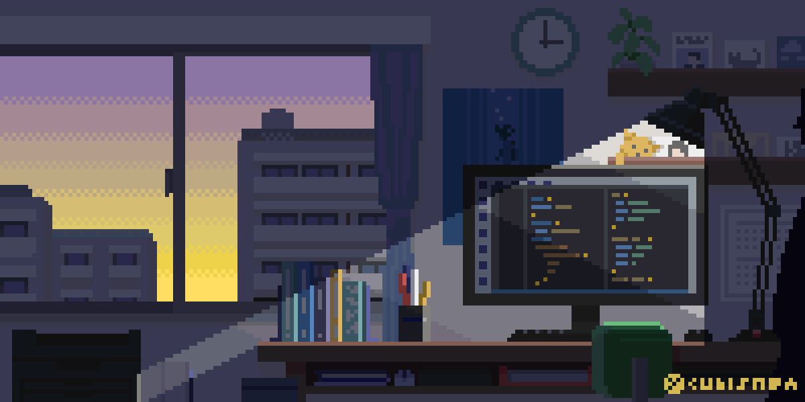

About
From hardware to coding...
My journey into technology started in grade 7 when I was introduced to 3D printing and computer hardware. What began as curiosity grew into a passion for problem solving and building new things.
In high school I took computer engineering and programming courses that pushed me to learn more. I enrolled in coding classes each year and joined co-op placements to gain real world experience that connected what I learned in class to practical applications.
At Toronto Metropolitan University I explored subjects such as mathematics, computer architecture and system organization. My favorite classes continue to be the coding courses where I feel the most inspired to create.
Even during the years when I had to lower my course load to focus on my health I stayed connected to my passion by working on personal projects which are featured below.
Eeshani Guest Inn
2016-2024
Freelancer/Junior Developer/Automation Support/IT Support
- Developed an AI-powered Python automation tool that reduced customer email response time by over 50%
- Provided technical support to 8+ remote users, resolving 100+ recurring cross-platform issues across Windows and Linux
- Created 10+ setup and troubleshooting guides to streamline onboarding and reduce support load
- Maintained 15+ devices with scheduled updates and proactive troubleshooting, resulting in 99% system uptime

SAP Canada
2018-2019
Junior Programmer
- Built and demoed two internal tools: a real-time Arduino-integrated event scoring system and a web-based Raspberry Pi car controller
- Identified and resolved 40+ software bugs during active sprints and assisted with QA documentation
- Created clear, maintainable documentation that supported cross-functional teams and new hires
Skills
Technical Support & Systems: Troubleshooting, end-user training, remote setup, Windows, Linux, Mac
OS
Full Stack Development: HTML,
CSS, JavaScript, Python, Java, Smalltalk, SQL, REact
Automation & Testing: Python
Scripting, Cypress, Selenium, Postman, REST Assured, GitHub Actions
Tools & Platforms: Microsoft
Azure, Git, Office 365, VS Code, Raspberry Pi, Arduino
Soft Skills: Communication,
collaboration, adaptability, proactive problem-solving